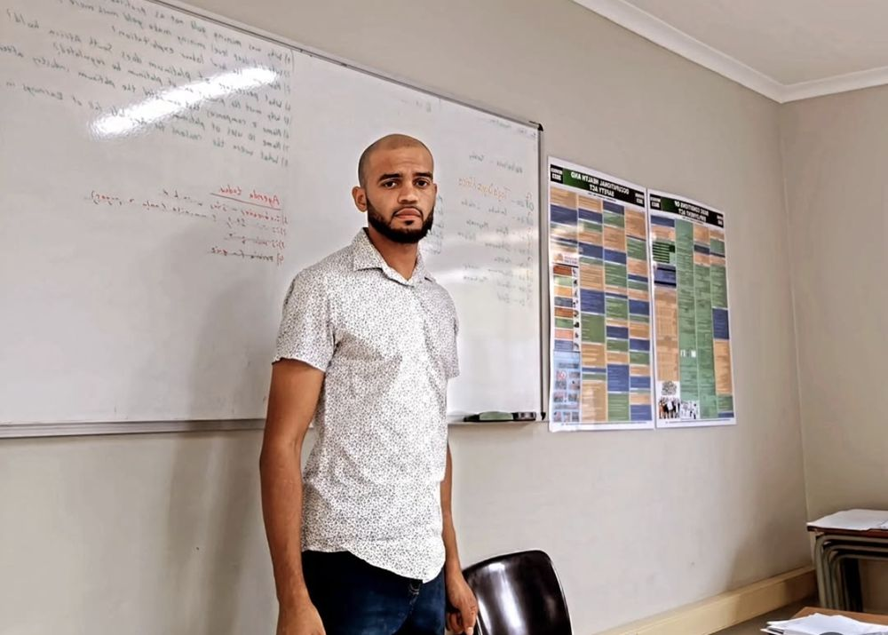
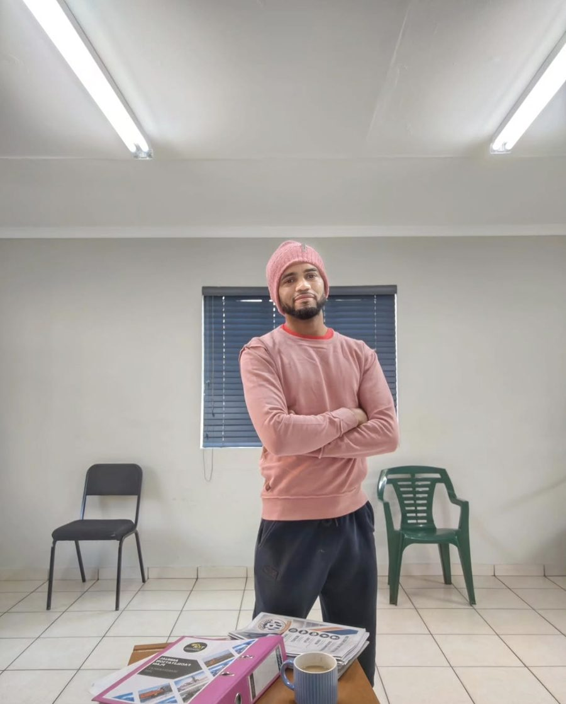
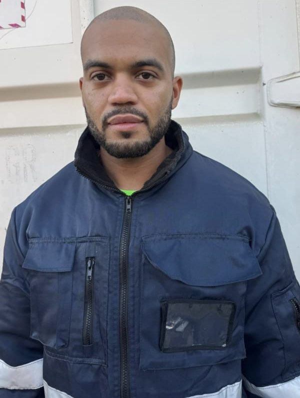

Interpreting
Simultaneous and consecutive SASL–English interpreting.
- Meetings and official sessions
- Government and public events
- Workshops and training days
- School, medical and social work appointments
South African Sign Language interpreting, training and language services for government departments, companies, schools and families.

Services
Simultaneous and consecutive SASL–English interpreting.
Practical sign language classes for people who work or live with Deaf people.
Support for organisations that want their content accessible in SASL.
Who YIVA serves
Booking


About the founder
Sign language has been my work since university, where I majored in South African Sign Language at North-West University in Potchefstroom.
For four years I taught English, SASL and Maths at Kutlwanong School for the Deaf. Some of my learners were also on the autism spectrum. I interpreted in school meetings, and for children, parents, social workers and school nurses in the community. I've also taught SASL to families of Deaf children, helped at Deaf sport events in Gqeberha, and interpreted for the Department of Public Works and Joburg e-Services.
I started YIVA so that Deaf people and the organisations around them can get an interpreter who knows the language and the community.
Muneer Omarjee
Jun 2026 – Present
YIVA SASL Interpretation
Jun 2026 – Present
TKR Operations, Tharisa Mine
Feb 2026 – May 2026
TKR Operations
Nov 2025 – Jan 2026
Cape Union Mart
Jun 2025 – Nov 2025
Subcontracted to Afro Miaki Group
Jun 2025 – Sep 2025
Community and contractors
2025
Musiekus
Feb 2021 – Dec 2024
Kutlwanong School for the Deaf
Contact
Call, WhatsApp or email with your date, venue and type of session, and you'll get a quote back.